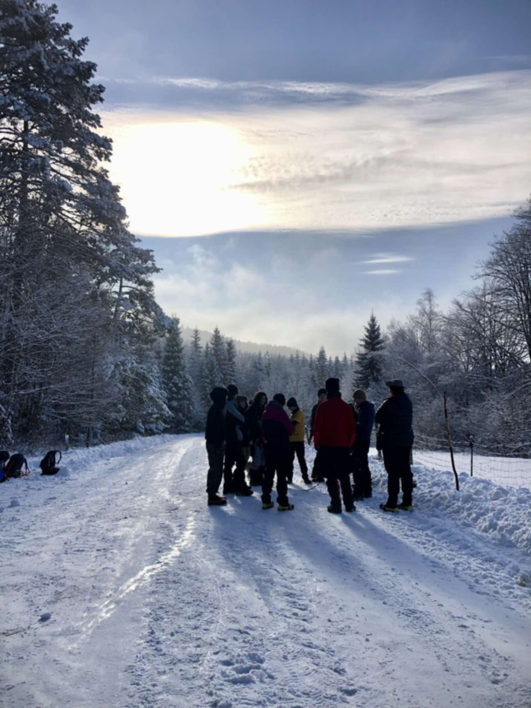
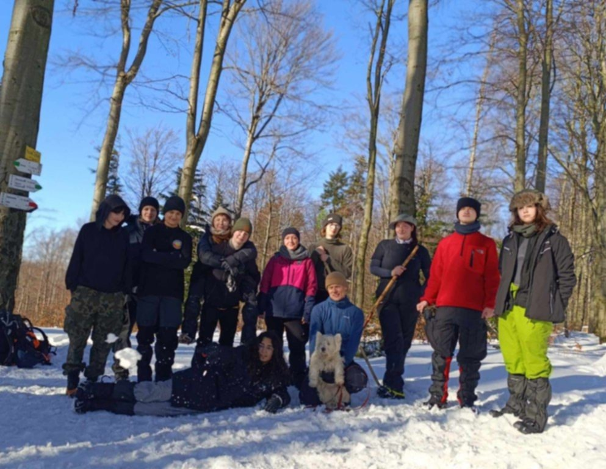
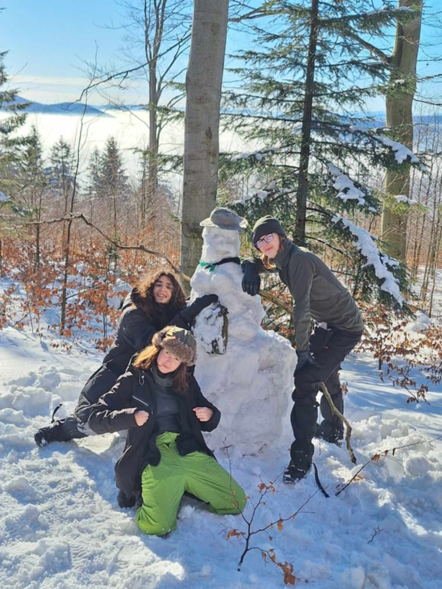
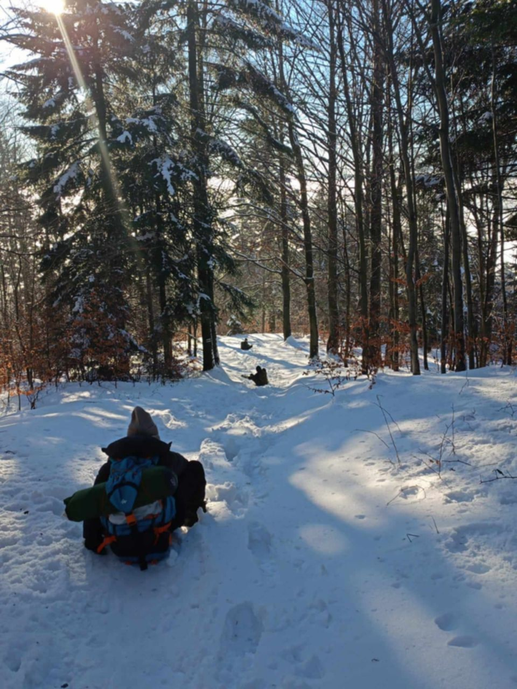
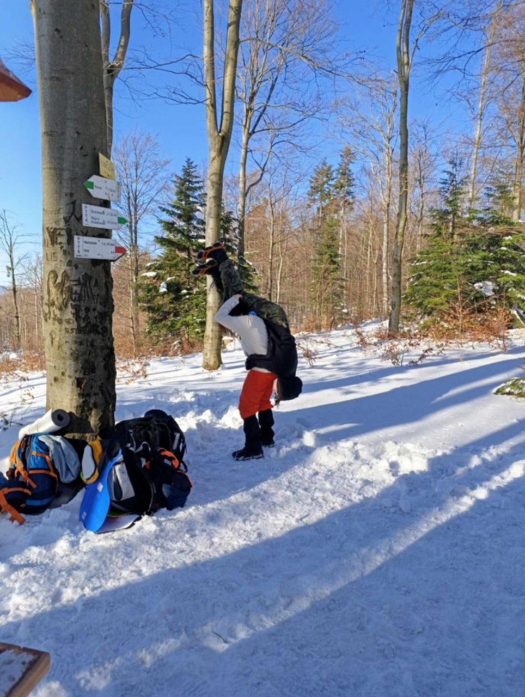

W ten styczniowy weekend nasza drużyna wybrała się na biwak w miejscowości Łosie! Na miejsce dotarliśmy późnym wieczorem w piątek. Odbyło się krótkie śpiewogranie 🎸 W sobotę rano, po śniadaniu, wyruszyliśmy na trasę na Kozie Żebro. Wędrówka ta była jednocześnie przygotowaniem do Zimowej Watry Wędrowniczej, dlatego zabraliśmy ze sobą plecaki, wymienialiśmy się poradami dotyczącymi utrzymania ciepła, przećwiczylismy rozkładanie namiotów na śniegu oraz obsługę turystycznych kuchenek gazowych 🍳!
    